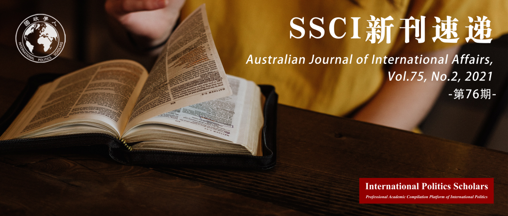

收录于合集 #新刊速递 123个

期刊简介
《澳大利亚国际事务杂志》（Australian Journal of International Affairs）是澳大利亚知名国际问题研究杂志，发表关于国际政治、社会、经济和法律问题的学术研究，特别关注亚太地区事务。
本期编委
【编译】 石雨宸 李思 吕紫烟 徐一凡 阮辰阳
【审校】 戴赟 黄慧彬 杨沛鑫 姚寰宇
【排版】 黄晨蕊
【美编】 方引弓

本期目录
1. 参与式视频：国际关系研究的新前景
Participatory video: a new outlook for international relations research
2. 规范侵蚀和澳大利亚对基于规则的秩序的挑战
Norm erosion and Australia’s challenge to the rules-based order
3. 澳大利亚是“优秀的国际公民”吗？ 传统中等强国的局限性
Australia the ‘good international citizen’? The limits of a traditional middle power
4. 国际压力与日本退出国际捕鲸委员会：当羞辱不起作用之时
International pressure and Japanese withdrawal from the International Whaling Commission: when shaming fails
5. 中等强国公众外交政策态度的结构： 一个跨太平洋的重复
The structure of foreign policy attitudes among middle power publics: a transpacific replication
01
参与式视频：
国际关系研究的新前景
【题目】 Participatory video: a new outlook for international relations research
【作者】 Lesley Pruitt，墨尔本大学社会与政治科学学院高级讲师
【摘要】 本文讨论了将参与式视频纳入国际关系（IR）研究的意义。基于现有的美学和视觉IR研究，作者认真讨论了一个案例研究，该案例将参与式视频纳入了亚太地区年轻女性领导力的研究。通过参与式视频，年轻女性改变了其容易被忽略的位置，并挑战了人们对其无法领导和做出决定的固有印象。参与式视频以这种方式破坏了权力关系并产生动摇，常常导致年轻人因决策而被边缘化。参与式视频可以为研究人员、研究参与者和国家之间现有的权力动态带来全新的思考和挑战，从而有效地推动IR研究的疆界。使用参与式视频的局限性和挑战也很明显并需要反思。总体而言，作者认为参与式视频可以带来新的批判和知识，从而有效地影响当前和未来的IR研究，提供独特的见解，而IR的其他方法（包括其他电影制作方法）可能难以实现。
This article considers the implications of incorporating participatory video in International Relations (IR) research. Drawing on existing aesthetic and visual IR research, I critically reflect on a case study incorporating participatory video in research investigating young women’s leadership in Asia and the Pacific. Through participatory video, young women redressed their common invisibility and challenged portrayals situating them as unable to lead and make decisions. In this way, participatory video disrupted and unsettled power relations often resulting in young people’s marginalisation from policymaking. Given its ability to make space for productive reflections on, and challenges to, existing power dynamics amongst and between researchers, research participants, and the state, participatory video can productively push the boundaries of IR research. Limitations and challenges of using participatory video are also evident and require reflection. Overall, I suggest that participatory video can generate new critiques and knowledge to productively shape current and future IR research, including through offering unique insights that could be missed by other methods in IR, including other filmmaking approaches.
【编译】 石雨宸
【审校】 戴赟
02
规范侵蚀和澳大利亚 对基于规则 的 秩序的挑战
【题目】 Norm erosion and Australia’s challenge to the rules-based order
【作者】 Megan Price：澳大利亚昆士兰大学国际关系(IR)专业博士
【摘要】 澳大利亚外交政策制定者越来越强调规则和规范的重要性。这些外交政策声明不仅反映出澳大利亚对中国魄力日增的担忧，同时也反映了澳大利亚的信念，即“深度”的无政府状态对于中等国家来说更加安全。然而，尽管澳大利亚一直在关注中国如何对国际秩序构成了威胁，但其自身也在不时积极地挑战这一秩序。比如，2019年10月澳大利亚总理（斯科特·莫里森）在洛伊研究所发表的关于“消极全球主义”的演讲。本文提出了一个基础的理论框架，以理解这些表现性挑战是如何产生并导致规范侵蚀的。该框架包含三个要素：被质疑的规则或规范；表征性策略；和国内观众。本文以澳大利亚总理在洛伊研究所发表的演讲为案例来论证这个框架。
Australian foreign policy makers increasingly place an emphasis on the importance of rules and norms. These foreign policy statements reflect concerns about China’s growing assertiveness combined with the belief that a ‘thick’ anarchy is safer for middle powers. Yet while Australia has been fixated with how China poses a threat to the international order, at times, Australia has actively challenged that order itself. Such was the case when the Prime Minister gave an address on ‘negative globalism’ at the Lowy Institute in October 2019. This article advances a theoretically grounded framework for understanding how these performative challenges arise and come to cause norm erosion. The framework draws together three elements: the rule or norm in question; representational strategies; and domestic audiences. The article illustrates this framework using the example of the Prime Minister’s Lowy Institute address.
【编译】 李思
【审校】 黄慧彬
03
澳大利亚是“优秀的国际公民”吗？ 传统中等强国的局限性
【题目】 Australia the ‘good international citizen’? The limits of a traditional middle power
【作者】 Gabriele Abbondanza，悉尼大学政府与国际关系系。
【摘要】 澳大利亚经常被描述为“优秀的国际公民”(GIC)，这与其作为“典型的”中等强国的地位有关。然而，有些因素可能破坏这两种观念。本研究回顾了GIC的概念，并通过提出一个专门的定义框架，对国际关系理论在该领域的研究做出了贡献，该框架包括：（一）尊重国际法；（二）多边主义；（三）对人道主义和理想主义目标的追求；（四）积极支持以规则为基础的秩序；（五）与身份认同相匹配的国内政策。基于对澳大利亚国内和外交政策的评估，本研究发现，有很多原因导致了澳大利亚已经损害了其作为GIC身份，这包括：对海上寻求庇护者的强硬政策；参与未经联合国批准的任务；将其全球多边主义转变为有选择的区域主义；削减对外援助的预算；对减缓气候变化持有争议的态度；以及更倾向于美国主导的全球秩序，而不是基于规则的国际社会。文章没有全面批评澳大利亚的外交政策，而是认为在21世纪，澳大利亚表现得像一个“中立的国际公民”、一个传统而非“典型的”中等强国。
Australia is often described as a ‘good international citizen’ (GIC), which is intertwined to its status of ‘quintessential’ middle power. However, a number of elements might undermine both notions. This research reviews the concept of GIC and contributes to this niche of IR theory by providing a dedicated definitional framework, which consists of: i) the respect of the international law; ii) multilateralism; iii) the pursuing of humanitarian and idealist objectives; iv) an active support for the rules-based order; and v) a congruous identity matched by consistent domestic policies. After assessing the country’s foreign and domestic policies against this, it finds that Australia has damaged its GIC credentials due to a number of reasons, including: the hard-line policies against seaborne asylum seekers; the participation in missions that are not sanctioned by the UN; the transformation of its global multilateralism into a selective regionalism; the budget cuts to foreign aid; a controversial attitude towards climate change mitigation; and a preference for the US-led global order over a rules-based international society. Far from criticising the country’s foreign policy in its entirety, it argues that in the 21st century Australia behaves as a ‘neutral international citizen’, and a traditional but not ‘quintessential’ middle power.
【编译】 吕紫烟
【审校】 杨沛鑫
04
国际压力与日本退出国际捕鲸委员会：当羞辱不起作用之时
【题目】 International pressure and Japanese withdrawal from the International Whaling Commission: when shaming fails
【作者】 Michal Kolmaš是布拉格大都会大学（Metropolitan University Prague）国际关系和亚洲研究助理教授。他的研究兴趣包括日本对外政策，国家认同和环境政治。他于2019年在Routledge出版社出版了新作《国家认同与日本修正主义》（National identity and Japanese revisionism）。
【摘要】 作为一种旨在说服目标行为体遵从某种规范的实践，“羞辱”在国际关系中的作用已经被广泛分析。近来，许多国际关系学者发现了一些羞辱对目标行为体不起作用的案例。尽管这些研究展示了羞辱如何起作用，但却并未解释清楚在何种条件下会起作用。为了填补这一空缺，本文分析了羞辱在日本捕鲸问题中的作用。在2018年，日本无视三十年来持续不断的国际压力，宣布退出国际捕鲸委员会。作者认为在日本捕鲸问题中羞辱有两种形式：行为暂停前的“软羞辱”和行为暂停后的“硬羞辱”。前者尽管对抗性较小，但对日本社会和政策制定者却起到了规范性影响，促使日本同意暂停并减少其捕鲸行为。后者主要以非政府组织的谴责和激烈的公众讨论组成，从结果上看起了相反的作用，给了保守派人士构建起“文化战”叙事的口实，并阻止了日本社会对反捕鲸规范的接受。作者认为，造成这一差别的根源在于日本的国内政治文化，其在羞辱战略的成功与否上发挥决定性作用。如果羞辱战略想要成功就必须仔细理解目标国家的社会文化。
Shaming in international relations has been extensively analysed as a normative practice that aims to persuade the target to comply with certain norms. Recently, IR scholars have identified cases, in which this process failed or antagonised the target. But although these studies have shown us how shaming works, they have not fully explained under what conditions shaming works. To remedy this, the article analyses the role of shaming in Japanese whaling controversy. In 2018, Japan announced its withdrawal from the International Whaling Commission, defying three decades of sustained international pressure. I identify two versions of shaming of Japanese whaling: premoratorium ‘soft’ and post-moratorium ‘hard’ shaming. The former, although less confrontational, had normative impact on Japanese society and policymaking, leading Tokyo to accept the moratorium and scale down on its whaling operations. The latter, marked by attacks of NGOs and heated discourse, had an opposite outcome and helped conservative policy entrepreneurs formulate a ‘cultural wars’ narrative that prevented the inception of anti-whaling norm. The reason for this difference, I argue, lies in Japanese domestic political culture, which played a defining role in the success/fail of shaming strategies. For shaming to be successful then, careful understanding of the target society is essential.
【编译】 徐一凡
【审校】 黄慧彬
05
中等强国公众外交政策态度的结构：一个跨太平洋的重复
【题目】 The structure of foreign policy attitudes among middle power publics: a transpacific replication
【作者】 Timothy B. Gravelle（SurveyMonkey研究科学高级经理）, Jason Reifler（埃克塞特大学政治科学教授）& Thomas J. Scotto（格拉斯哥大学社会与政治科学学院教授）
【摘要】 经验模型阐明了大众如何在许多外交政策问题上组织他们的观点。对于公众外交政策态度的模型来说，通常以美国调查数据为支持的，由好战性全球主义（militant internationalism）与合作性全球主义（cooperative internationalism）为基础的模型已经让位于通过跨国调查数据支持的，以更大潜在样本数量为假定的模型。不过，很少有研究评估多因素模型的跨国有效性；此外，处于国际领导国和追随国之间的中等强国也未被研究。本文利用来自加拿大和澳大利亚这两个典型的中等强国的新的调查数据以重复一个最近的具有影响力的外交政策态度模型；模型中的外交政策态度包括四项因素，分别为合作性全球主义、好战性全球主义、孤立主义以及对国际正义的支持。通过使用探索性结构方程建模（exploratory structural equation modelling, ESEM）框架，本文发现在美国、英国、法国和德国观察到的外交政策态度的四因素结构对加拿大和澳大利亚公众是有效的；然而，不同国家有各自特定的细微差别，这体现出加拿大人与澳大利亚人在理解外交政策选项的方式上的区别。
Empirical models illustrating how mass publics organise their views on foreign policy issues abound. Models that posit militant internationalism and cooperative internationalism as the two factors structuring mass foreign policy attitudes and that typically rely on American survey data have given way to models positing a larger number of underlying factors supported by cross-national survey data. Still, there are few studies assessing the cross- national validity of multi-factor models. Further, middle power states that must navigate between international leadership and followership remain understudied. This article draws on new survey data from Canada and Australia—two archetypal middle power states—to replicate a recent and influential model of foreign policy attitudes comprised of four factors: cooperative internationalism, militant internationalism, isolationism, and support for global justice. Using an exploratory structural equation modelling (ESEM) framework, it finds that the four-factor structure of foreign policy attitudes observed in the United States, United Kingdom, France and Germany obtains among the Canadian and Australian publics, yet there are country- specific nuances that suggest differences in the ways Canadians and Australians perceive foreign policy options.
【编译】 阮辰阳
【审校】 杨沛鑫
好好学习，天天“在看”
国政学人
支持学术公益与知识传播
微信扫一扫赞赏作者 __赞赏
已喜欢，对作者说句悄悄话
取消 __
发送给作者
发送
最多40字，当前共字
上一页 1/3 下一页
长按二维码向我转账
支持学术公益与知识传播
受苹果公司新规定影响，微信 iOS 版的赞赏功能被关闭，可通过二维码转账支持公众号。